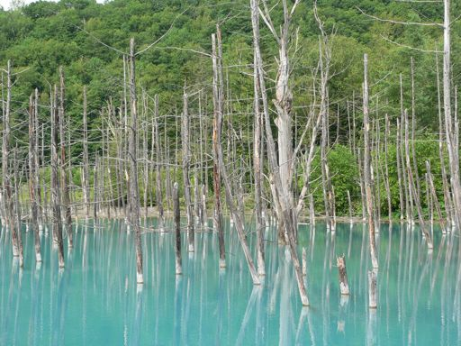
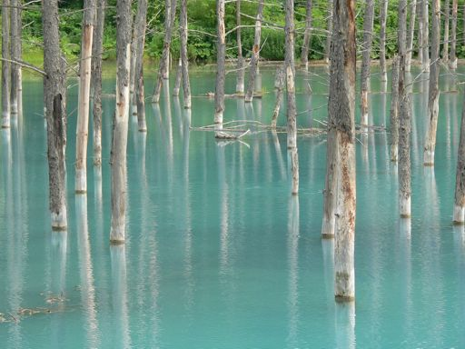

some where in the next town...
Blue Pond
When my family traveled Frano and Biei in Hokkaido ,
I saw this pond in the cover of a calendar being sold at the stand of "Kanno Farm".
I was fascinated by the color of the mysterious pond that I have never seen until now.
Purchasing the calendar, I asked the staff where the lake is.
However, she said that it is not a lake but a pond.
In addition, she said ...
It is called "the blue pond."
The time required to there is about 20 minutes by car.
"The blue pond" is near the Shirogane hot spring.
We were not planning going there, but we decided to go to the pond.
Although I lived in Hokkaido from junior high school to high school, I have not heard such a blue pond. I thought that it was strange... However, after 20 minutes we were able to find "the blue pond" as the staff told us. show map
When my family traveled Frano and Biei in Hokkaido , I saw this pond in the cover of a calendar being sold at the stand of "Kanno Farm". I was fascinated by the color of the mysterious pond that I have never seen until now. Purchasing the calendar, I asked the staff where the lake is. However, she said that it is not a lake but a pond. In addition, she said ... It is called "the blue pond." The time required to there is about 20 minutes by car. "The blue pond" is near the Shirogane hot spring. We were not planning going there, but we decided to go to the pond.
> Although I lived in Hokkaido from junior high school to high school, I have not heard such a blue pond. I thought that it was strange... However, after 20 minutes we were able to find "the blue pond" as the staff told us.
Blue Pond

It is the same color as we looked by the cover of the calendar. Not the color of organic systems such as the algae, the water itself seems to be tinged with blue. Not blue to suggest the deep blue sky even if I say blue. Is it the feeling of the color of a soft blue sky...?


Pictures above are a part of the trees which stood blighted. The transparency of the water does not seem to be high. It is not muddy and is the feeling that dissolved watercolors.
As well as a blue color, the trees which stood blighted in the pond may give a mysterious atmosphere to this pond.
{kind=link}

{kind=link}
A river appeared when I went to the back along the pond. Surprisingly, the water of the river as well as the pond was the same blue color.